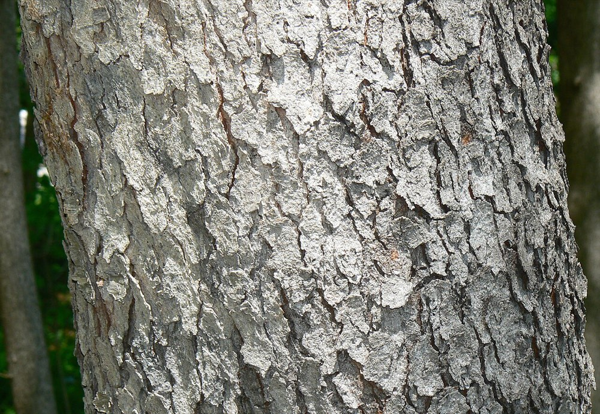
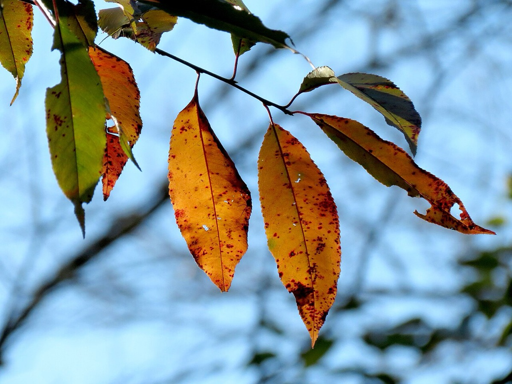
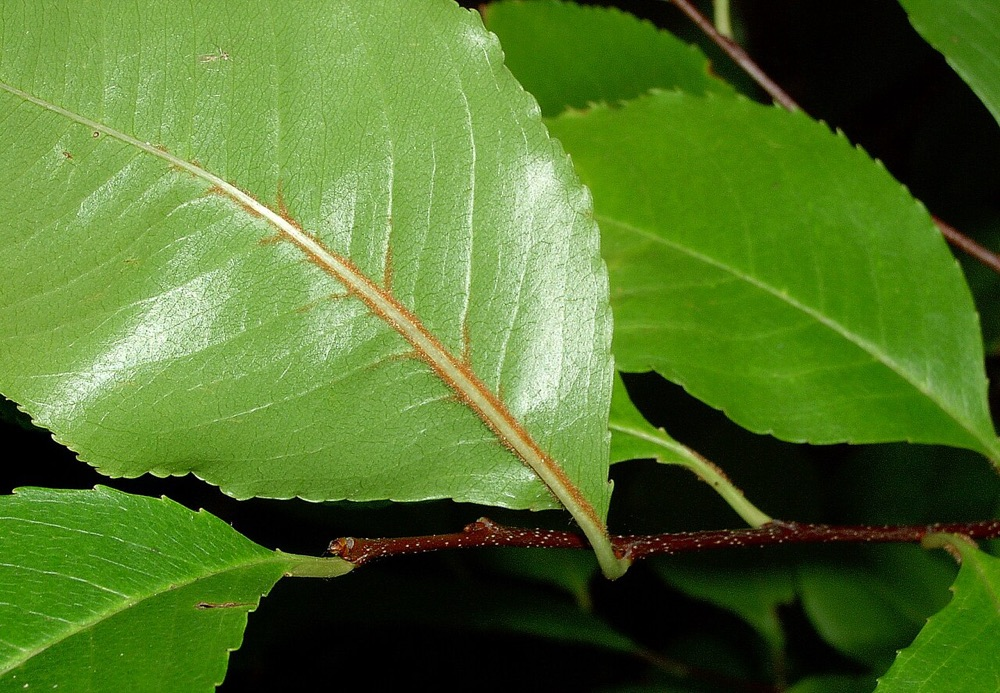

Black Cherry
Prunus serotina



- Kind
- tree · Rosaceae
- Native to Vermont
- yes
- Legal status
- Native; no special legal status found. Leaves, twigs and bark release cyanide when damaged and can poison livestock. (checked 2026-10-30)
- Look-alikes
- Sweet cherry; American plum; Choke cherry; Fire (pin) cherry; Serviceberry (small trees)
Names
Black cherry, Prunus serotina (serotina means "late", for its late-ripening fruit).
Range and habitat
Native. A medium-sized tree; on good sites it develops a long, straight, clear trunk and can approach 100 feet.
How to identify (by season; look-alikes and the key difference)
- Leaves: alternate, simple, oblong to lance-shaped, 2 to 5 inches, finely toothed, dark green and glossy above and paler below, often with dense yellow-brown (sometimes white) hairs along the midrib; tiny glands on the leaf stalk.
- Twigs: scratch one: a bitter-almond smell. Small semicircular leaf scars with three bundle scars.
- Bark: smooth with horizontal lenticels on young trees; very dark, rough plates that curl up ("burnt corn flakes") on older ones.
- Look-alikes: sweet cherry, American plum, choke cherry and fire cherry. The seedling guide also warns of serviceberry and beech in small sizes.
By growth stage (trees: seedling, sapling, pole-size, mature or old; what to look at in each)
| Stage | What to look at | What you see |
|---|---|---|
| Small seedling | leaf shape, teeth, bud, twig | Elliptical leaves with fine, shallow teeth pointing toward the tip; stout brown buds developing green scale margins later in the season; lenticels on twigs; the buds stay small and stout. |
| Larger seedling | midrib, twig, smell | Orange fuzz at the base of the midrib is sometimes present (a good clue but not consistent); lenticels on twigs; scratched bark smells of almonds. |
| Sapling and pole-size | bark | Smooth bark with short horizontal lenticels. |
| Mature and old trees | bark, form | Nearly black, broken into small rough irregular plates that curl upward; long straight trunk on good sites. |
| Winter, any age | twig, bud | Slender reddish-brown twigs with almond smell; buds about 1/5 inch, with several glossy reddish-brown to greenish scales. |
| Fruit (late summer) | cherries | Dark purple to nearly black, about 1/3 inch. |
Through the year
Dates are typical for Vermont and shift with elevation and year; "approximate" means the source gave a season and the dates are a translation of it.
| When | What | Look for | What to do | Dates |
|---|---|---|---|---|
| May 15 to Jun 10 | flower (identify) | Small white flowers in hanging, narrow clusters 4 to 6 inches long, in late spring. | - | approximate |
| Aug 15 to Sep 30 | fruit (identify) | Round dark purple, nearly black fruits about 1/3 inch across with a bittersweet taste, ripening in late summer; birds and mammals eat them. | - | approximate |
| Nov 1 to Mar 31 | dormant (identify) | Slender reddish-brown twigs with a bitter-almond smell and taste; very small glossy-scaled buds; bark nearly black and breaking into small curled plates like burnt corn flakes. | - | approximate |
Signs on the land (tracks, scat, browse, nests, holes, calls)
Black bears eat wild cherries in summer (Black Bear).
Role in the forest (what it eats, what eats it, what it needs)
Many birds and mammals eat the fruit; deer, rabbits and hares browse the foliage and stems (search summary of the factsheet).
What helps it thrive (light, soil, shelter, food and the trees it uses)
- Light: a seral, shade-intolerant, gap-phase species. Seedlings may survive in the understory for about 5 years and then die back, but they survive well and grow rapidly in full sunlight; any disturbance that opens the canopy releases the bank of suppressed seedlings, and young trees then fill the gap quickly (FEIS).
- Soil: grows on a variety of soil types, textures and drainages but is most abundant on mesic sites.
- Seeds and sprouts: typically hundreds of thousands of seeds are stored in the soil, and the tree sprouts vigorously from the stump after cutting or fire.
- Wildlife: deer eat the leaves and twigs without harm and take small to moderate amounts of seedlings and saplings; the fruit is important mast for many birds and mammals. It occurs as scattered individuals in many eastern forest types.
Managing for it (habitat practices) and living with it (conflicts and damage)
Not recorded here. Wilted cherry leaves and bark are poisonous to livestock (search summary of the factsheet): keep animals away from cut branches.
Legal status
No special status found.
Sources
- Virginia Tech Dendrology, Black cherry: https://dendro.cnre.vt.edu/dendrology/syllabus/factsheet.cfm?ID=66 (read 2026-10-30)
- J. Robertson and J. Truong, A Guide to the Seedlings of New England (FEMC, 2021): https://www.uvm.edu/femc/attachments/project/999/seedling_guide-compressed_1.pdf
- USDA Forest Service, Fire Effects Information System, Prunus serotina: https://www.fs.usda.gov/database/feis/plants/tree/pruser/all.html (read through a summarizing fetch 2026-11-01)
What this page is based on
Kind of source: mixed (Virginia Tech factsheet; New England seedling guide; search summary of a landowner sheet)
What was read: Virginia Tech Dendrology factsheet (ID 66) for black cherry, read through a summarizing fetch on 2026-10-30, and the black cherry pages of A Guide to the Seedlings of New England (read as text). The factsheet gives no habitat beyond site quality. The cyanide warning is from a search summary of the same factsheet. Calendar windows translate 'late spring', 'late summer' and 'winter'. Habitat needs (light, soil, regeneration, response to cutting) added 2026-11-01 from the USDA Forest Service Fire Effects Information System species review (summarizing fetch); the review is national in scope and the Northeast details are those it names.
Last checked: 2026-10-30
Vermont Woodland Owner's Reference, built 2026-11-09. Rules and dates here are summaries, not legal advice; dates shift with elevation and year. Photo and recording credits · The text is by Loop Works, CC BY 4.0 (pictures and recordings keep their own licenses) · Note: _reference/US-VT/Species/Black Cherry.md